数说:
跨越时空的“黄昏浪漫”
鼠标向下滚动继续阅读
老年人的面包与爱情
2035年左右，中国60岁及以上老年人口将突破4亿，在总人口中的占比将超过30%，进入重度老龄化阶段……
▽ 老龄化进程持续推进...
不知道从什么时候开始，
我们身边的一个群体开始逐渐壮大。
他们大都白发苍苍，
可能也有些许驼背。
在公共建筑的门口，
驼背但恪尽职守的高龄门卫
正逐步成为社会生活的典型景观。
在公园的健步道上，
身穿运动服的老人成为了晨练群体中不可忽视的一部分。
在道路两旁，
身穿环卫服的大爷大妈
日复一日地维持着市容整洁……他们或拄着拐杖，
或坐着轮椅，
或红光满面。
他们走过城市的街头巷尾，
踏过无数清晨与黄昏，
不动声色地改变着社会这棵参天大树的根与叶。
他们带来的新变化默然不语，
却也深入社会最深层次的基因。
当我们猛然抬起头，
我们将发现……
人口老龄化概况
20056万
全国65周岁及以上老年人口20056万人，占总人口的14.2%
20.8%
全国65周岁及以上老年人口抚养比20.8%
5个
平均不到5个年轻人赡养1位老人
▽ 养老服务不断完善...
根据国家统计局数据，在我国的人口老龄化浪潮中，老年群体经济来源总体单一。近年来，我国老年服务资金不断增加，养老保险待遇不断提升，为我国老年人的幸福生活提供了坚实的物质基础。
8月，
暮夏时节，
老人王建军已经早早换好了运动服，
离开了单元楼，
慢跑着踏上了旧城区的人行步道，
开始了晨练。
王大爷晚年丧妻，
老伴死于突发性心脏病，
自那以后，
晨练就成了老人为数不多的消遣与快乐来源。
据王大爷所说，
儿子小王也已经大学毕业、
找到了薪资可观的工作，
近几年基本在社会上稳定了下来。
靠着年轻时的一点存款和儿子的供养，
老人虽然称不上大富大贵，
但物质生活也算富足舒适。
在经济上，
这个平凡的大爷就是如今独身老人的一个典型代表。
根据国家统计局数据，受益于我国巨大人口红利浪潮，子女抚养以及退休工资成为养老经济来源的主力军，而大多独身老人则以其他家庭成员供养作为生活主要来源。
据统计，在全国60岁以上的老人主要依靠家庭其他成员供养，其次是劳动收入与离退休养老金。
而在60岁以上的独身（包括未婚、离婚及丧偶）老人的主要收入来源中，家庭其他成员供养占比高达44.89%，其余方式占比较少，经济来源较单一。
当然，
王大爷的境况并不能概括当今的所有老人，
由于不可避免的客观因素影响，
总有些老人的晚年生活不算那么宽裕。
在晨练的间隙，
王大爷向我们分享了他一位老工友于刚的情况。
早年间，
老于和王大爷一起在矿井工作，
在拆迁时也都分到了一套属于自己的房子，
在将孩子拉扯大之后，
丧偶的悲剧却也降临到了老于头上。
但不同于王大爷的是，
老于的儿子于坤鸿在做生意的时候时运不佳，
不但赔上了家里拆迁时分的房子，
还借了大量外债，
全家的积蓄在一夜之间不翼而飞，
如今的老于几乎完全断了经济来源。
而当我们问及王大爷老于的生活状况时，
老人咧嘴一笑，
说道：
“还不是那老家伙生在了好国家，赶上了好时代！”
▽ 政府对老年人的保障
截至2021年末
全国共支出老年福利资金386.2亿元，
养老服务资金144.9亿元
我国养老服务事业加快发展，已经基本实现老年人高龄津贴、服务补贴和护理补贴制度的全国覆盖。
截至2021年末，全国共有3994.7万老年人享受老年人补贴，其中享受高龄补贴3246.6万人，享受护理补贴90.3万人，享受养老服务补贴573.6万人，享受综合补贴84.2万人。
据王大爷说，
即便是拉不下脸不愿再出去受累的老于，
仅靠津贴也能满足温饱，
甚至时不时和他喝一顿酒。
而事实上，
国家为了照顾到老于这种境况的独身老人，
让社会真正实现老有所养，
正在逐步加强老年人的民生保障建设，
政策的倾斜力度日渐增大，
一套养老保障体系正在稳步落实。
养老保险覆盖范围继续扩大。
截至2021年末，全国基本养老保险参保人数102871万人，比上年增加3007万人。全年共为2354万困难人员代缴城乡居民养老保险费26.8亿元，5427万困难人员参加基本养老保险，参保率超过99%。
养老保险待遇水平继续提高。
全国城乡居民养老保险月人均养老金达到179元，比上年增长5.3%。
2012年到2022年6月底，基本养老保险参保人数从7.9亿人增加到10.4亿人， 参保人数十年增加了2.5亿人。

▽ 亟待满足的婚恋需求
这天，
王大爷在家门口不慎摔倒，
被120救护车送至医院进行诊治。
院方反映老人在医院无人照看，
且没有王大爷家属的联系方式。
社区快速了解情况后，
安排社工去施以援助。
王大爷是小区里的独居老人，
而像王大爷这样的独居老人还有很多。
第七次人口普查数据显示，
我国老龄人口超过2.64亿，人户分离规模逼近5亿人
丧偶老人将近5000万
离婚、丧偶、人户分离……扑面而来的一个现实是
越来越多的老年人，正深陷“孤独”的漩涡
中国社科院的一项调查则显示
80%的丧偶老人有再婚意愿，其中进行婚姻登记的不足1成
老年婚恋需求亟待满足。
当生命列车行驶到了人生的最后半程，他们，也许更需要这一份“黄昏浪漫”。
居委干部得知情况后，
立刻行动、分工合作，
一边赶到医院；
一边联系王大爷的儿子王瀚宇。
病房中社工刘阿姨询问王大爷：
“咋不再给自己再找个老伴呢？老年人搭伙过日子，
互相也有个照应。”
“确实想过再找个老伴”
王大爷无奈的摇了摇头，
接着说“难找呀，难找。”
像王大爷这样，
有着另寻伴侣的想法的老年人不在少数。
▽ 老人们的渴求和纠结...
情感需要占据首位，
之后依次是 经济支持、 生活照料、 性需求。
“我找老伴，我90多岁的时候不能伺候你，但你90多岁的时候得伺候我。”
“还伺候他，你瘫啊，伺候你，你找保姆去吧。”
“不是我的菜，我就这么坦率”
“就像智能手机和老年机，用不用是我的事，但功能要有”。
老年相亲节目上，大爷大妈们直言不讳的神吐槽、脑洞大开思路清奇的段子、不时冒出参透人生真谛的金句，配合直接丰富的面部和肢体语言，在电视画面上直观呈现，太戳到年轻人的心理情感，引发共鸣。
当撕破节目搞笑的效果与包装，我们需要从老年人相亲节目表面的热闹逗乐中，读懂老年群体的孤独和渴望；更需要行动起来，切实了解他们的真正需求与难处，让他们以自己喜欢的方式过一个幸福的晚年。
出走半生，饱经风霜的老年人，物质生活大抵都能维持，但是在互联网时代，他们争相选择“二次择偶”，其中缘由，引人深思。

老年人不仅抱有向往爱情的天真，更多了一份过来人的谨慎。
在黄昏之时踏出的再婚脚步，与年轻人的说爱就爱相比，
这些中老年人不得不为感情增添上一层现实的保障，
就像在菜市场的讨价还价，他们坚守底线，
无论男女，都处于挑剔和被挑剔中。
人品和品德占比高达73.68%，互相支持和理解占比位居第二达到57.89%。
在我国像老王的这样的独身老人有很多，
虽然“黄昏恋”群体庞大，
但要真正实现再婚的却很少，
他们的婚恋道路上亦有众多艰难坎坷。
根据《中国老年人生活质量发展报告（2019）》相关数据显示，
全国60岁以上的老年人中，无配偶的达35%，有再婚意愿的达37.6%，
但付诸行动的只有6.9%。传统观念的束缚、
子女的反对、财产分配的担忧、相亲途径有限等问题
都有可能成为老年人走向婚姻殿堂的路上的重重阻碍。
▽ “浪漫”的迷局...
2022年年初，广州一位91岁老人在某婚恋网站上认识了52岁的李某。这位老人的老伴于2017年去世，之后老人一直想再找一个老伴一起生活。
李某对老人十分热情，两人互相在微信上聊得很投缘，很快就约出来见面。“我很想找一个贴心的人过完下半生。”，老人跟李某说。
相识半个月左右，李某主动提出和老人结婚，要6万元彩礼钱和1万多元的戒指钱。老人在李某的陪同下，先后从多家银行取出7.8万元现金。随后李某又让老人和她一起炒股。
当老人再次到银行取出6000元现金，准备交给李某时，正好遇到老人的女婿，李某见此情形慌忙逃离。之后老人再也联系不上李某，这才意识到自己被骗了……
多元的相亲渠道带来一定便利的同时，良莠不齐的信息也裹挟着袭来。
一些中老年人缺少一定辨别能力和反诈意识，很难想象“千里佳缘一线牵”的，是真爱，还是坐等他们上钩的骗子，往往走入披着“浪漫”外衣的迷局。
中老年人生活中常遇到的六大诈骗类型为交易诈骗、返利诈骗、交友诈骗、兼职诈骗、仿冒诈骗、金融信用诈骗。
其中,交友诈骗占比11.2%，位居第三。
中老年人遭遇的交友诈骗最常见的是索借钱财类，
此类手法占比中老年交友诈骗类型的84%，
如借钱吃饭、充话费、买车票等。
而被骗金额最高的交友诈骗是诱导投资类，
人均损失在万元以上，最高达到10万以上。
▽ 老年人的艾滋困境
《一条》曾经做过一份在线调查：“你认为你的父母还有性生活吗？”近1000份答卷里，有85%的年轻人认为父母已经没有性生活。真相可能与年轻人想象相距甚远。潘绥铭教授的《给“全性”留下历史证据》中写道：在中国55-61岁的老年人中，53%的人每月至少有一次性生活，还有14%的老年人可以达到每星期1次以上。
一边是普遍的误解和忽视，一边是客观存在且难以排解的需求。这份被社会大众所“阉割”的爱与欲望，最终催生出许许多多在欲望之舟上风雨飘摇的衰老脆弱的人群。
我国艾滋病人群老龄化趋势不容忽视。一方面是感染者的年龄构成在向老年人群倾斜，另一方面新发感染的老年人在不断增加。
中国皮肤性病学杂志刊登的《桂北地区老年人对艾滋病知识及法规知晓的调查分析》显示，在50岁以上男性艾滋病知晓率调查中，21.29%的老年人不知道艾滋病,仅有38.47%的人知晓3个传播途径，而只有2.24%的人知晓安全套可以有效预防艾滋病。
接到老家父亲摔倒住院的消息，
在外地务工的小王马上买了车票赶往医院。
在确认自己父亲已无大碍之后，
他对社区工作者们连连道谢。
小王来到医院外点了一根烟，
接受着到场记者的采访。
当记者提及王大爷没有再找个老伴陪伴的情况时，
小王透露道：
“非但我爹没找着伴，现在连我也不想结婚。”
记者大为惊讶：
“你年纪轻轻不想结婚？”
面对记者的提问，
小王摆了摆手，
说起了自己的婚恋观。
00后的老年时代
自古以来，“成家”是中国社会最为重要的人生事件之一。
从调查来看，对于“只有遇到喜欢的人才结婚”、
“只想谈恋爱，不想结婚”、“一个人很好，不想谈恋爱”这几个问题，
随着受教育水平提高认同度呈现出递增的趋势。
由此可见，人们的婚姻观在发生变化。
随着受教育程度提高，
人们已不再普遍认为婚姻是人生的必需选项，
并将更多的情感意义赋予其中，人们对于是否结婚的自主性在增强。
分年龄段来看，
将“生儿育女和传宗接代”作为结婚目的的比例在最年轻的样本群体中仅为5.22%，
在45岁及以上样本中增长较为明显，
达到了16.77%，
但仍然存在年长世代认同度高于年轻世代的现象。
受教育水平越高，人们对于婚姻经济目的认可度越强，
这一比例在研究生及以上样本群体中达到20.51%，而在初中及以下样本群体中仅为11.56%。
 

随着我国国民受教育程度的整体提高，
年轻一代对于婚姻有了更多元的看法，
对于是否结婚的自主性逐渐增强。
其中不婚主义年轻人的数量明显增加，
选择结婚的人现在相较于关注生育功能本身，
更纠结于婚姻中的情感价值，经济价值，社会功能等方面。
医院外的对话还在继续
记者:“你为什么会形成这样的婚恋观呢？”
小王:“结婚，生孩子，
养孩子这些都太费钱了。
咱都是打工人赚点钱也不容易，
何必为难自己？
与其这样还不如专心经营自己，
好好享受人生。”
说到这小王突然有些感慨了起来：
“以前一起潇洒的朋友婚后生活都很闹心，
有的现在连30块钱的烟都舍不得抽，
这是严重的消费降级哈哈”
他顿了顿接着说：
“我不想成为后代与婚姻的奴隶。”
记者:“你现在是这样想，
那你对老年生活有什么打算呢？”
小王眯着眼，
看着从指间升起袅袅的烟雾，
若有所思了起来……
虽然年轻人与老年人在婚恋观上存在较大差异，但经济因素在影响两个群体能否结婚中均占据重要地位。
未来，人口红利浪潮过后，年轻一代养老经济结构的变动，个体不婚或不育带来的其他家庭成员供养的缺失，这些均将成为众多年轻人在老年婚恋时需要面对的问题。
离退休养老金仍是众多老年人的重要经济来源，
但不少网友却对未来的养老金发放金额抱有悲观态度。
此外，
与不断增加的老龄人口相比，
年轻人口数量在不断减少，
年轻人赡养老年人的压力也在与日俱增。
▽ 离退休养老金占比34.67%
▽ 报告称养老金结余
会在2035年耗尽？
2019年4月，中国社科院世界社保研究中心发布《中国养老金精算报告2019～2050》，其中提到“2019年全国城镇企业职工基本养老保险基金累计结余为4.26万亿元， 此后持续增长，到2027年达到峰值6.99万亿元， 然后开始迅速下降，到2035年耗尽累计结余。”
1）未来30年，赡养率翻倍，从2:1变为1:1。 即2019年，每两个缴纳社保的劳动力赡养一个退休老人， 而到了2050年，每一个缴纳社保的劳动力赡养一个退休老人。 通俗地说，就是交钱的人少了，领钱的人多了。
2）养老金累计结余在2027年达到峰值，并在2035年或将耗尽。 这在网上一度被解读为“2035年开始，80后将无养老金可领”。
实际上，基本养老保险基金是不可能出现2035年耗尽的情况的，作为国内信用最高的“保险”，他是有中央财政兜底的。而该预警模型的是为了更好地制定政策，基本养老保险不会出现违约风险，情况也没有网友想象的那么糟糕。
以下为中国社科院世界社保研究中心发布《中国养老金精算报告2019～2050》的图表
虽说基本养老保险基金不会真的出现耗尽的情况，但这建立在现行制度有所调整的基础上。
如果不做任何改变，那养老金耗尽的情形就不会仅仅出现在假设模型之中了。
2035年养老金耗尽的结论，更多的一种预警信号。
▽ 家庭其他成员供养占比32.66%
▽ 预计2050年每2个年轻人需要承担抚养1位老人的责任
1964-2020年，中国65岁及以上人口占全球老人比重从14.8%升至25.6%，相当于全球每4个老年人中就有一个中国人。预计到2035、2050年，中国65岁及以上老年人口将分别达3.27、3.93亿，占全球老人比重将分别为21.8%、26.2%。
随着我国经济的发展以及生育观念的转变，与老年婚恋亟待更多关注与满足的现状相比，我国的结婚登记数量在2014年就开始逐年下降。在未来，我国老年人口数量迅速攀升，而年轻人群体数量则有明显减少。其中，作为婚育主体的年轻人自然在起着重要作用。
2013年为1346.93万对，2019年跌破1000万对大关，2021年为763.6万对，跌破800万对大关。2022年，全国结婚登记数量为683.3万对，较上一年减少80.3万对，下降约10.5%。
- 年份
- 1986
- 1987
- 1988
- 1989
- 1990
- 1991
- 1992
- 1993
- 1994
- 1995
- 1996
- 1997
- 1998
- 1999
- 2000
- 2001
- 2002
- 2003
- 2004
- 2005
- 2006
- 2007
- 2008
- 2009
- 2010
- 2011
- 2012
- 2013
- 2014
- 2015
- 2016
- 2017
- 2018
- 2019
- 2020
- 2021
- 2022
- 结婚登记（万对）
- 882.3
- 924.7
- 899.2
- 934.8
- 951.1
- 953.6
- 954.5
- 912.1
- 929
- 929.7
- 934
- 909
- 891.8
- 885.3
- 848.5
- 805
- 786
- 811.4
- 867.2
- 823.1
- 945
- 991.4
- 1098.3
- 1212.2
- 1241
- 1302.4
- 1323.6
- 1346.9
- 1306.7
- 1224.7
- 1142.8
- 1063.1
- 1013.9
- 927.3
- 814.3
- 763.6
- 683.3
时光荏苒，时间到了2035年，不婚主义的小王也到了62岁。退了休的他依靠着年轻时存下的存款和退休金比年轻时更加轻松自在。
在社区里的老年兴趣团体里，小王凭借着年轻时发展的兴趣爱好成了妥妥的活跃分子。老伙计旅游聚会也总是踊跃他的身影，和朋友们在一起的时候，他总是自得其乐。
可是当他回到家，面对既空旷又灰暗暗的屋子，看着窗外的万家灯火却没有一盏属于自己时，他的心里总是空落落的。
85岁，小王大病一场住进了医院。看着临床老头有家人的精心照顾，他心里满是羡慕。这时的他多想能有这样一个人陪在他身边和他共面死亡的恐惧啊。绵绵不绝的孤独让他在人生最后时刻终于切身体会到了父亲老年的悲凉与无助。
2023年，护士喊小王去登记家属信息。
小王掐灭了烟告诉记者说:“就这样吧。”
▽ 对话
L（现在的老年人）：孩子你后来结婚了吗？
F（未来的老年人）：没有结婚，但是我最后还是后悔了当初的选择。在我们这个时代，人们更加注重个人幸福和自由，婚姻不再只是传宗接代的工具。
L：可是不生孩子结什么婚？
F：在未来，我们更注重夫妻间的平等和互助，成为并肩作战的伙伴，在经济方面相互支持，共同经营生活。
L：那么，你们那个时代大家还能领上的养老金吗？社会保障制度怎么样呢？
F：是的，未来的社会发生了很大的变化。我们拥有更加完善的养老金和社会保障制度，这使得我们的晚年生活更加安心和舒适。
L：真为你开心孩子，知道你未来过的那么好我就放心啦。
数据来源：
[1] 国家卫生健康委（NHC）,全国老龄办（CNCA）：2021年度国家老龄事业发展公报
[2] 国家统计局（National Bureau of Statistics）：第七次全国人口普查公报
[3] 国家统计局（National Bureau of Statistics）：中国人口普查年鉴-2020
[4] 中华人民共和国人力资源和社会保障部（MOHRSS）：历年人力资源和社会保障事业发展统计公报（2012-2021）
[5] 中华人民共和国民政部（Ministry of Civil Affairs）：历年结婚登记人数数据（1986-2022）
[6] 中国老龄科学研究中心（CRCA）：中国老年人生活质量发展报告（2019）
[7] 中国社科院世界社保研究中心（CASS CISS）：中国养老金精算报告2019-2050
[8] 腾讯110平台（Tencent Guard）：中老年人反欺诈白皮书
参考资料：
[1] 管典安.人口老龄化背景下农村老人再婚问题研究[J].东岳论丛,2014,35(02):141-144.
[2] 陈蓉.我国大城市年轻人口的婚姻推迟趋势及其影响研究——基于人口普查数据的分析[J].中国青年研究,2023,(04):43-52.
[3] 黎玉芬,张萍萍,陈宜香,蒋丽君,李哲,韩志香.桂北地区老年人对艾滋病知识及法规知晓的调查分析[J].中国皮肤性病学杂志,2010,24(11):1030-1032.
[4] 潘绥铭. 给“全性”留下历史证据[M]. 中国香港: 1908有限公司出版, 2017: 120–123.
[5] 孙楠.中国人口发展调查：不同人口群体的婚恋观.文汇报
[6] 彭丽.难以谈论的性：老年人的爱与欲.三联生活周刊
[7] 央视网：广州91岁老人婚恋网站遭遇杀猪盘：被52岁已婚女子索要彩礼